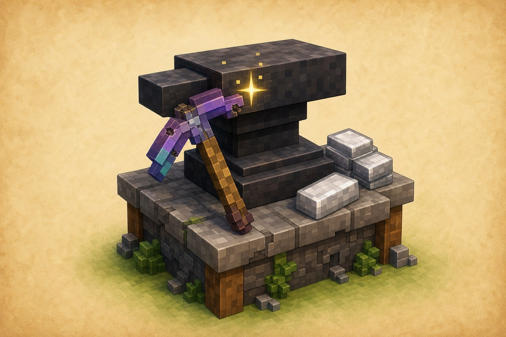

Важливе відкриття
Зроби речі крутішими
Улюблена кирка
не мусить ламатися.
Ковадло лагодить речі, дає їм назви й переносить чари з книги.

Навіщо воно потрібне?
На хорошому інструменті вже можуть бути рідкісні чари. Ковадло допомагає не починати все заново.
Три прості дії
Як користуватися ковадлом
Полагодити річПредмет + його матеріал+
Поклади предмет у ліву комірку, а його матеріал — у праву. Наприклад: залізну кирку й залізний злиток.
Можна покласти другу таку саму кирку: міцність складеться, а сумісні чари можуть об’єднатися.
Дати назвуПредмет + порожня права комірка+
Поклади предмет у ліву комірку. Праву залиш порожньою, введи назву зверху й забери результат.
Назва теж коштує трохи рівнів досвіду.
Додати чари з книгиПредмет + зачарована книга+
Поклади предмет ліворуч, а зачаровану книгу праворуч. Сумісні й такі, що не конфліктують, чари перейдуть на предмет.
Книга зникне, коли ти забереш готову річ.
Лагодження: як це виглядає
кирка
злиток
в формі
Для роботи потрібні рівні досвіду.
Підказка мандрівникові
Важливо знати
Матеріал має збігатися
Залізна кирка лагодиться залізом, алмазна — алмазами.
Спершу подивись ціну
Ковадло покаже, скільки рівнів досвіду піде до підтвердження.
Треба зняти чари?
Тоді знадобиться точило. Ковадло потрібне, щоб лагодити й додавати.
Маленьке завдання
Спробуй за 5 хвилин
- Постав ковадло поруч із верстаком.
- Полагодь один пошкоджений залізний інструмент.
- Дай йому назву. Наприклад: «Кирка-дослідниця».
Бонус: спробуй перенести чари із зачарованої книги на інструмент.